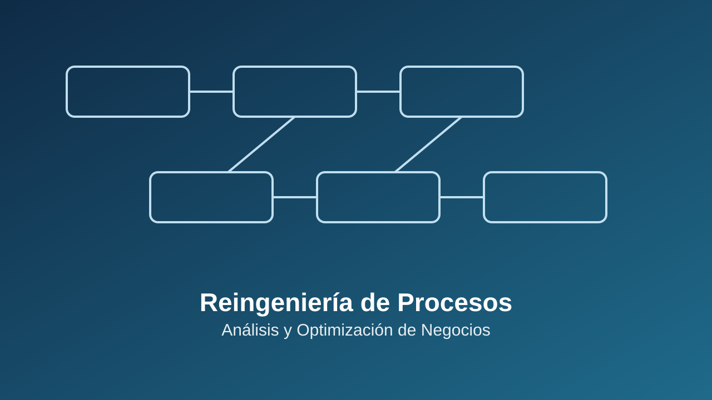
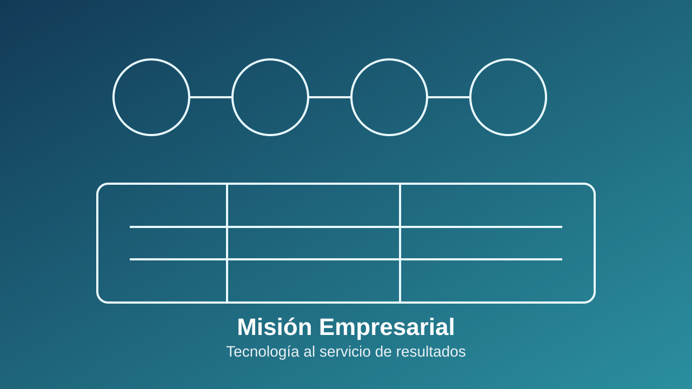
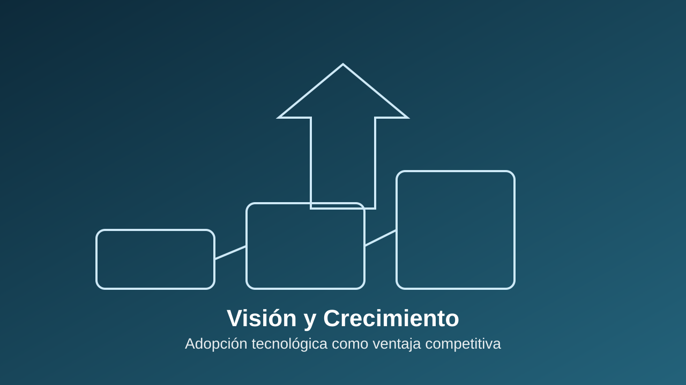

Escala cibernética de servicios
Sube cada escalón y activa un nuevo nivel de evolución digital
DESIC.CL es una empresa dedicada a la implementación, gestión, arquitectura, optimización y desarrollo de aplicaciones, proyectos, mejoras y automatización de procesos para distintas empresas.
Nuestra misión es entregar información, asesoría e implementación de mejoras operacionales con foco en resultados concretos y sostenibles.

Orígenes de la iniciativa
DESIC.cl nace a fines de 2024 a partir de una convicción profunda: el mundo empresarial cumple un rol fundamental en la construcción de un mejor país.
La iniciativa surge con el propósito de acercar las nuevas tecnologías a diversos sectores y modelos de negocio, facilitando la optimización de procesos, la reducción de costos y la aceleración de los tiempos de operación.
Todo ello con un claro enfoque en resultados, orientado a generar una mejor experiencia y a poner la tecnología al servicio de los desafíos cotidianos que enfrentan emprendedores, empresarios, trabajadores, sus familias y las comunidades en las que las organizaciones están presentes.

Misión
Proveer a las empresas acceso efectivo a nuevas tecnologías, servicios de rediseño y reingeniería de procesos, con el objetivo de maximizar su potencial competitivo.
Aportamos un know-how profundo y especializado de cada industria, simplificando y optimizando cada etapa del flujo de trabajo desde las operaciones más simples hasta los procesos de mayor complejidad para generar eficiencia, valor sostenible y mejores resultados de negocio.

Visión
Transformar la percepción de la implementación de procesos informáticos, superando la idea de que son complejos, lejanos o de alto costo, para integrarlos de manera natural como un componente esencial del proceso de emprendimiento y crecimiento empresarial.
Aspiramos a consolidar un liderazgo reconocido a nivel regional, impulsando la adopción tecnológica como un habilitador clave de competitividad, innovación y desarrollo sostenible.
Casos de éxito
Casos en proceso
Tecnologías utilizadas
Usamos distintas IAs para las distintas actividades, entre las cuales destaca Ollama, entrenada de manera local y offline para la privacidad de datos sensibles. Trabajamos con tecnologías de licenciamiento MIT y GNU GPL, salvo que el cliente solicite una tecnología particular.


Contáctenos
Nos encantaría saber de ti. Por favor, contáctanos utilizando la información a continuación.
- E-Mail: contacto@desic.001webhospedaje.com/
- Dirección: Diagonal 23 1/2 Norte D 3877, Talca, Región del Maule, Chile
- Teléfono: +59 965863188